object_creation_menu
object_creation_menu_and_hotkey
delete_menu
delete_object_menu_and_hotkey
edit_menu
edit_object_menu_and_hotkey
slow_down_time
slow_down_time_and_hotkey
pause_on/off
pause_on/off_and_hotkey
normal_speed_of_time
normal_speed_of_time_and_hotkey
time_speed_up
time_speed_up_and_hotkey
move_object
move_object_and_hotkey
traces_menu
traces_menu_and_hotkey
camera_menu
camera_menu_and_hotkey
interaction_menu
interaction_menu_and_hotkey

settings_menu
settings_menu_and_hotkey
help_menu
help_menu_and_hotkey
new_object_options
Параметры нового обьекта:
color_input
Цвет:
random_color_checkbox
Cлучайный
mass_input
Масса:
negative_mass
Negative mass
fixed_object_checkbox
Неподвижный:
select_main_object_button
Выбрать главный обьект
creation_parameters
Параметры создания:
object_creation_relative_to
Создание объекта относительно:
center_of_mass
Центр масс
main_object
Главного объекта
movement_compencation
Movement compencation
circular_orbit_on_click
Click - circular orbit:
clockwise_input
Clockwise:
changed_with_the_mouse_wheel_when_creating_an_object
launch_speed
Launch speed:
pause_while_new_object_creates
Pause when creating an object
show_distance_checkbox
Show distance:
trajectory_calculate_checkbox
Прощет траекторий
affects_the_performance_when_calculating_the_trajectory
trajectory_calculate_length
Trajectory calculation length:
affects_the_performance_when_calculating_the_trajectory
trajectory_calculate_accuracity
Точность прощета траектории:
deleting_objects_options
Параметры удаления обьекта:
delete_nearest_to_cursor_object
Delete the object closest to the cursor
delete_further_from_cursor_object
Delete the object farthest from the cursor
delete_the_biggest_object
Delete the biggest object
delete_last_added_object
Delete the last added object
editing_object_properties
Редактирование свойств обьекта:
select_object_button
Select object
color_input
Color
mass_input
Mass:
negative_mass
Negative mass
fixed_object_checkbox
Fixed:
zero_speed_button
Reset speed
traces_settings
Параметры следа:
no_traces
No traces
traces_mode_1
Trace mode 1
affects_performance
traces_mode_2
Trace mode 2
traces_mode_3
Trace mode 3
disappearance_time
Disappearance time:
trace_opacity
Trace opacity:
trace_thickness
Traces thickness:
trace_blur
Trace blur:
affects_performance
trace_particles
Particles:
trace_trembling
Trembling:
trace_length
Traces length:
trace_thickness
Traces thickness:
trace_quality
Traces quality:
trace_length
Traces length:
clear_traces
Clear traces
camera_options
Camera options:
follow_object
Follow object:
select_object_button
Select object
zoom_to_screen_center
Zoom to screen center:
camera_reset
Reset camera
gravity_force_modes
Gravity force modes:
inversely_proportional_to_the_cube_of_the_distance
Inversely proportional to the cube of the distance
inversely_proportional_to_the_square_of_the_distance_(usually)
Inversely proportional to the square of the distance (reality)
inversely_proportional_to_distance
Inversely proportional to distance
constant_attraction
Constant attraction
proportional_to_distance
Proportional to distance
collision_modes
Collision modes:
collision_merge
Merge
collision_rebound
Rebound
no_collision
No collisions
constants
Constants:
force_of_gravity
Force of gravity:
movement_resistance
Movement resistance:
rebounce_elasticity
Rebounce elasticity:
turn_back_time
Turn back time
interaction_modes
Режимы взаимодействия:
between_all_objects
Between all objects
only_with_parent_object
Only with parent object
no_interactions
No interactions
language
Language
select_language
Select language:
Українська
Русский
English
view
View
background_color
Background color:
background_image
Background image:
no_image_found_at_this_address
*No image found for this URL
image_url
background_image_opacity
Background image opacity:
background_movement_on_mouse_movement
Background movement
max_performance
Max performance
performance
Performance:
show_fps
Show FPS
gpu_compute
Hardware acceleration (GPU)
load/save_world
Load/save world:
load
Load
save
Save
Record & Playback
Rec
Play/Pause
Reset
hotkeys
Hot keys:
help_menu_and_hotkey
object_creation_menu_and_hotkey
delete_object_menu_and_hotkey
edit_object_menu_and_hotkey
slow_down_time_and_hotkey
pause_on/off_and_hotkey
normal_speed_of_time_and_hotkey
time_speed_up_and_hotkey
move_object_and_hotkey
traces_menu_and_hotkey
camera_menu_and_hotkey
interaction_menu_and_hotkey
settings_menu_and_hotkey
create_a_new_object_at_the_cursor_position
create_object_and_hotkey
toggle_fps
contacts
Contacts
mail
Mail
:
orbitsimulator1@gmail.com
GitHub
0
number_of_objects
Number of objects
:
1